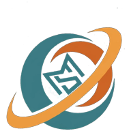

Lancez le streaming dans OBS : le signal apparaît ici.
Une destination « lancée » part en direct dès que le signal d'OBS arrive. Pour un essai sans public, laissez tout arrêté.
Aucune destination pour l'instant. Ajoutez Facebook pour commencer.
Dans OBS : Paramètres, Stream, Service « Personnalisé ».
••••••••••••Les clés ne s'affichent jamais sur cette page : vous pouvez la montrer pendant un live.